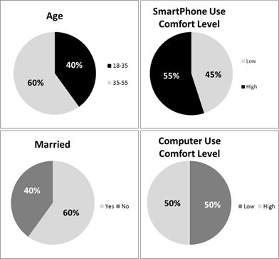
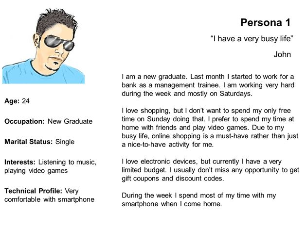
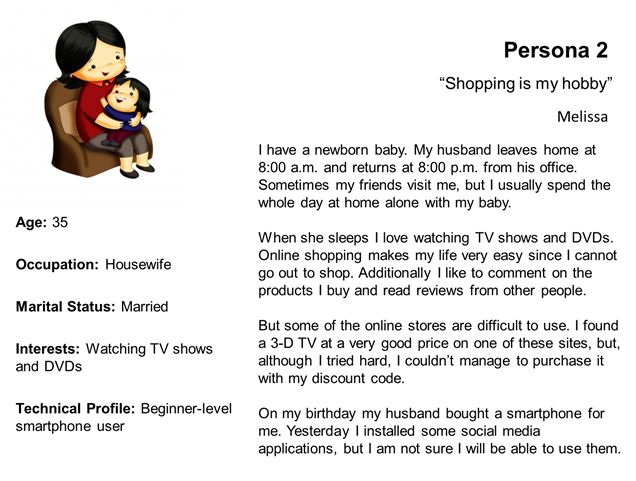
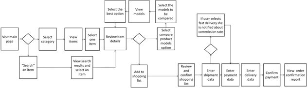
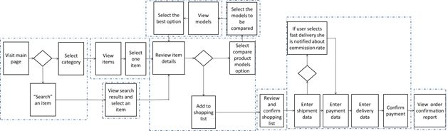
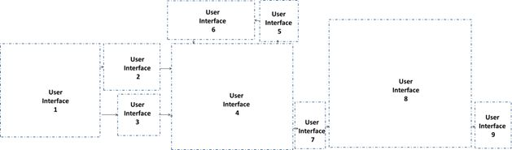
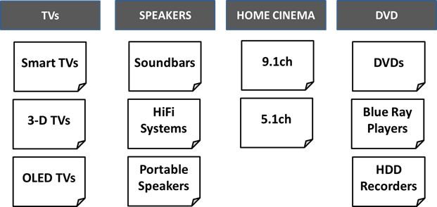
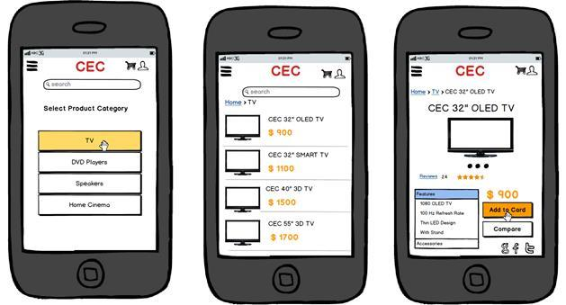
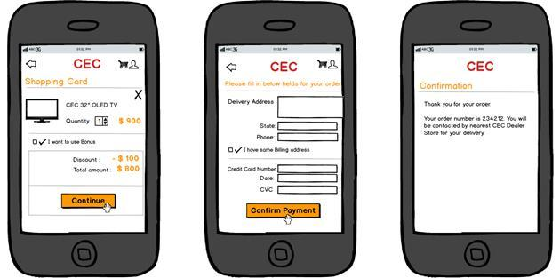

Thiết kế Trải nghiệm người dùng và Tính khả dụng
Trải nghiệm người dùng (user experience - UX) tốt nhất trên một sản phẩm chỉ có thể đạt được nếu tính khả dụng cũng được coi là yêu cầu bắt buộc trong suốt quá trình phân tích và thiết kế, bên cạnh các mối quan tâm về chức năng và thẩm mỹ trực quan.
Tính khả dụng là tiêu chí quyết định mức độ dễ dàng của một sản phẩm đối với người dùng. Ngay cả khi nó rất thanh lịch và có chức năng tuyệt vời, một sản phẩm không thể đáp ứng đầy đủ nhu cầu của người dùng trừ khi nó có thể dùng được. Vì vậy các tính năng không được sử dụng của sản phẩm tạo ra một lượng lãng phí rất lớn.
Phương pháp tiếp cận Gaudi
Trong suốt lịch sử thiết kế kiến trúc, Gaudi là kiến trúc sư nổi tiếng nhất với phương pháp thiết kế kiến trúc lấy người dùng làm trung tâm. Trong thời thơ ấu của mình, Gaudi có sức khỏe kém. Tình trạng này khiến ông không thể đến trường, và ông đã dành phần lớn thời gian của mình trong tự nhiên. Những quan sát về thiên nhiên của ông đã truyền cảm hứng cho cách tiếp cận thiết kế của ông, có thể tóm tắt như sau: “Cuốn sách tuyệt vời luôn luôn mở và chúng ta nên cố gắng đọc, đó là cuốn Tự nhiên.” Sử dụng triết lý này, ông đã thiết kế các tòa nhà với “phong cách hữu cơ”, sau đó trở thành một tiêu chuẩn quan trọng trong kiến trúc.
Nhân cách hóa sản phẩm
Một người đàn ông khác đã cách mạng hóa ngành công nghệ cao theo cách tương tự. Bằng cách đặt người dùng vào trung tâm của quá trình phân tích và thiết kế, Steve Jobs đã dẫn đầu việc đổi mới các sản phẩm điện tử tiêu dùng hữu dụng nhất từ trước đến nay.
Ông đã tạo ra những người dùng tự nhiên cho các sản phẩm của mình. Ngay cả trẻ em cũng có thể sử dụng thiết bị di động của công ty ông (tức là Apple) với các thao tác tương tự như hành vi tự nhiên của chúng. Cách tiếp cận thiết kế mới này đã khiến công ty của ông trở thành công ty hoạt động tốt nhất trong ngành công nghệ cao.
Sau thành công của phương pháp này, người ta nhận ra rằng việc nhân hóa sản phẩm không nhất thiết phải đạt được bằng các tính năng nhân hóa mà chủ yếu là đảm bảo tính tiện dụng.
Xây dựng giao diện xoay quanh người dùng
Cách tiếp cận thiết kế UX tinh gọn - lấy người dùng làm trung tâm cũng như lặp đi lặp lại để cải tiến - nên được áp dụng để đảm bảo tính khả dụng của một sản phẩm mới.
-
Xác định Trắc diện Người dùng (User Profile)
“Thiết kế cho mọi người” không phải là một chiến lược khả thi và hiệu quả về mặt tính khả dụng. Các giao diện của sản phẩm có thể sử dụng được nếu chúng phù hợp với người dùng. Do đó, thiết kế giao diện người dùng của sản phẩm phải dựa trên hồ sơ trắc diện của các nhóm người dùng mục tiêu. Việc định hình trắc diện (profiling) có thể được thực hiện dựa trên các đặc điểm đa dạng của người dùng, chẳng hạn như:
-
tuổi tác,
-
giới tính,
-
giáo dục,
-
mức độ thoải mái khi sử dụng máy tính,
-
mức độ thoải mái của điện thoại thông minh, và
-
nền tảng kinh doanh.
Đối với dự án ứng dụng di động CEC, định hình trắc diện khách hàng thể hiện như sau:
Một cách hiệu quả để hiểu trắc diện người dùng (user profile) trong các phiên thu thập yêu cầu là hỏi người dùng ý kiến của họ về các sản phẩm hiện có. Nhận xét của người dùng có thể được giải thích để hiểu khả năng và điểm yếu của chính họ. Điều này khiến chúng ta nhớ đến một câu trích dẫn của triết gia nổi tiếng Spinoza: "Nếu Pierre kể điều gì đó về Paul, chúng ta học về Pierre nhiều hơn là chúng ta học về Paul."
Ngoài các cuộc phỏng vấn và các cuộc họp nhóm tập trung với người dùng, các nhà thiết kế UX cũng nên tiến hành các kỹ thuật phân tích hiện trường — chẳng hạn như phân tích tác vụ của người dùng và tạo bóng — để quan sát người dùng trong ngữ cảnh của riêng họ và sau đó lập hồ sơ trắc diện cho họ.
-
-
Xác định Hình mẫu cá tính (Persona) và Mô hình tâm trí (Mental model) của họ
Một khía cạnh quan trọng khác của việc lấy người dùng làm trung tâm là thiết kế theo cảm xúc. Con người đánh giá sản phẩm dựa trên khả năng cảm xúc logic của não trái và não phải. Và trong hầu hết thời gian, cảm xúc là tiêu chí chính trong nhận định mua một sản phẩm của họ.
Để phù hợp với cảm xúc của họ, trước tiên người dùng tạo ra một mô hình tâm trí về sản phẩm mà họ sử dụng. Mô hình này hướng dẫn họ trong suốt toàn bộ trải nghiệm của họ với sản phẩm. Do đó, các thiết kế giao diện người dùng nên dựa trên mô hình tâm trí của người dùng hơn là của các nhà thiết kế.
Hình mẫu cá tính (Persona - còn được gọi là Cá tính điển hình), là các nhân vật tưởng tượng đại diện, là cách tốt nhất để xác định mô hình tâm trí của các trắc diện người dùng đa dạng và dự đoán tương tác được kỳ vọng của họ với sản phẩm và hành vi trên giao diện người dùng. Mặc dù có thể có nhiều trắc diện người dùng cho một sản phẩm, nhưng các nhà thiết kế UX nên giới hạn số lượng hình mẫu cá tính (Persona) ở mức ba (hoặc nhiều nhất là bốn trong trường hợp cực đoan) để tránh rơi vào bẫy “thiết kế cho tất cả mọi người”. Mô tả hình mẫu cá tính nên bao gồm tên, ảnh, thông tin nhân khẩu học và phần kịch bản tình huống.
Đối với dự án ứng dụng di động CEC, nhóm UX đã xác định hai hình mẫu cá tính sau sau khi phân tích các trắc diện người dùng và làm việc với đơn vị kinh doanh tiếp thị.
 -
Thiết kế tương tác
Trong cách tiếp cận thiết kế UX tinh gọn, việc đáp ứng nhu cầu của người dùng với một số bước tối thiểu trên giao diện người dùng của sản phẩm được đánh giá cao. Điều này có thể đạt được nhờ một thiết kế tương tác tốt.
Nếu được xác định rõ ràng, lưu đồ trực quan hóa các tình huống ca sử dụng sẽ tạo thành cơ sở hoàn hảo cho sự tương tác thiết kế của người dùng với sản phẩm.
Trong quá trình thiết kế tương tác, các hộp trên các nhánh của biểu đồ được nhóm lại trong các vùng chứa. Các vùng chứa này (hộp đứt nét) trở thành cửa sổ giao diện người dùng chính, hộp thoại hoặc hộp thông báo. Hoặc một số vùng chứa kết hợp để tạo thành một giao diện người dùng duy nhất. Liên kết giữa các vùng chứa biểu đồ luồng trở thành yếu tố điều hướng, chẳng hạn như liên kết. Phương pháp này, chủ yếu dựa trên việc phân nhóm các yêu cầu, giúp giảm thiểu nguy cơ thiếu bất kỳ chức năng nào trên giao diện người dùng của sản phẩm. Nó cũng ngăn chặn sự không phù hợp giữa luồng các kịch bản tình huống ca sử dụng và luồng giao diện người dùng, đồng thời đảm bảo tính khả dụng.
Đối với dự án ứng dụng di động CEC, lưu đồ được sử dụng để thiết kế tương tác như sau:
 -
Kiến trúc thông tin
Giao diện người dùng của sản phẩm không chỉ bao gồm các yêu cầu chức năng (nhiệm vụ) mà còn bao gồm các yêu cầu về nội dung.
Do đó, song song với thiết kế tương tác (dựa trên yêu cầu chức năng), kiến trúc thông tin (dựa trên yêu cầu nội dung) cũng cần được thiết kế. Mục tiêu chính của thiết kế kiến trúc thông tin là xác định các yêu cầu nội dung, xác định danh mục nội dung và hoàn thiện cấu trúc điều hướng của giao diện người dùng của sản phẩm bằng cách sử dụng các kỹ thuật như phân loại thẻ (card-sorting) và wireframes.
Trong cách tiếp cận tinh gọn, nội dung trên giao diện người dùng của sản phẩm phải có hai thuộc tính chính:
-
Cô đọng
-
Có những câu ngắn gọn và đi vào trọng tâm
-
Không có chỗ cho việc hiểu sai
-
Có nội dung đơn giản và diễn đạt với số lượng từ tối thiểu. Trích dẫn này của Mark Twain mô tả tình huống này rất hay: “Tôi không có thời gian để viết một bức thư ngắn, vì vậy tôi đã viết một bức thư dài.”
-
-
Hữu ích
-
Nội dung trên giao diện người dùng nên loại bỏ sự mất thiện cảm của sản phẩm đối với người dùng. Giao diện người dùng phải nói ngôn ngữ của người dùng, không phải của nhóm kỹ thuật.
-
Thay vì đưa ra cách tiếp cận kiểu vạn năng (one-size-fits-all), nội dung phải giải quyết nhu cầu thông tin của các hình mẫu cá tính mục tiêu (target personas). Những người đại diện cho một hình mẫu cá tính (Persona representatives) cần cảm thấy rằng nội dung trên giao diện người dùng của sản phẩm được tạo ra đặc biệt dành riêng cho họ.
-
Nội dung nên có liên kết và lời kêu gọi hành động (call to actions - CTA) rõ ràng giúp người dùng điều hướng một cách trực giác mà không cần suy nghĩ nhiều.
-
Phân loại thẻ
Nếu nội dung không được gom lại chính xác, người dùng sẽ gặp khó khăn để tìm những thứ mà họ đang tìm kiếm trên giao diện người dùng của sản phẩm. Đây là một loại khiếm khuyết phổ biến về tính khả dụng.
Phân loại thẻ là một kỹ thuật kiến trúc thông tin hiệu quả để ngăn ngừa rủi ro này. Nó được sử dụng để phân loại nội dung.
Trong kỹ thuật phân loại thẻ, các mục nội dung được viết trên thẻ và người dùng đại diện cho hình mẫu cá tính (persona) được yêu cầu gom các mục này thành nhóm.
Bằng cách sử dụng nghiên cứu phân loại thẻ, cấu trúc danh mục sản phẩm của ứng dụng di động CEC được xác định như sau:
 -
-
Thiết kế giao diện người dùng
Nhà thiết kế UX chuyển đổi thiết kế tương tác và kiến trúc thông tin thành giao diện người dùng của sản phẩm bằng cách áp dụng các nguyên lý về thiết kế UX cũng như tính khả dụng.
Ngay cả những nhà thiết kế có kinh nghiệm nhất cũng không thể tạo ra thiết kế tối ưu trong lần dùng thử đầu tiên. Thiết kế tốt là kết quả của nhiều lần lặp lại. Lặp lại là một chu kỳ thực hiện một cái gì đó, thử nghiệm nó, cải thiện nó và kiểm tra lại nó.
Thực hiện lặp lại trên thành phẩm (sản phẩm đã hoàn chỉnh) là một cách tiếp cận rất tốn kém. Bởi vì đối với mỗi lần lặp lại, các thành phần kỹ thuật của sản phẩm phải được thay đổi và thử nghiệm lại, trong khi việc thay đổi nguyên mẫu dễ dàng và nhanh hơn nhiều so với việc thay đổi thành phẩm.
Trong cách tiếp cận tinh gọn, nhóm dự án và khách hàng nên thường xuyên gặp nhau và đánh giá sớm chức năng và khả năng sử dụng của sản phẩm trên nguyên mẫu.
Các công cụ tạo mẫu gần đây cho phép mô phỏng các sản phẩm và giả lập chúng theo cách tương tác. Chúng cho phép người dùng thực hiện các hành động, chẳng hạn như điều hướng giữa các giao diện, chọn các tùy chọn và nhận thông báo bằng các tin nhắn lỗi. Nhờ các tính năng tương tác này, các khiếm khuyết liên quan đến chức năng và tính khả dụng có thể được tìm thấy và sửa chữa ở giai đoạn đầu của dự án mà không cần đợi các bài kiểm tra chấp nhận của người dùng trên thành phẩm.
Bằng cách tiếp cận lặp đi lặp lại này, có thể ngăn chặn được một số lượng lớn các yêu cầu thay đổi. Đồng thời phát hiện sớm các khiếm khuyết, không cần chờ đợi các bài kiểm thử chấp nhận của người dùng (UAT) muộn màng, giúp giảm chi phí sửa chữa và loại trừ lãng phí.
Trong cách tiếp cận tinh gọn, nguyên mẫu cũng được coi là hàng trữ đang chế tạo (work-in-process inventory). Do đó, thay vì mô phỏng mọi giao diện người dùng và tạo ra sự lãng phí, các nhà thiết kế UX nên tạo ra các nguyên mẫu của giao diện người dùng chỉ tương ứng với các tính năng ưu tiên cao, được sử dụng thường xuyên nhất.
Đối với dự án ứng dụng di động CEC, nhóm BA-Works chỉ mô phỏng giao diện người dùng của các tính năng sản phẩm ưu tiên cao đã được phát triển với cách tiếp cận Waterfall ở giai đoạn đầu của dự án. Để đạt được sự đơn giản, giao diện người dùng của ứng dụng dành cho thiết bị di động bao gồm mọi thứ mà người dùng cần và không có gì mà họ không cần đến.
Việc có các thiết kế tương tác dựa trên các ca sử dụng và lưu đồ được chuẩn bị kỹ lưỡng giúp nhóm dự án dễ dàng tạo nguyên mẫu của các tính năng ưu tiên cao tạo nên phiên bản cốt lõi của sản phẩm. Nhóm đã phát hiện và khắc phục sớm các lỗi liên quan đến chức năng và khả năng sử dụng trên nguyên mẫu trước khi phát hành nó trên thị trường. Điều này đã ngăn chặn một lượng đáng kể lãng phí do các yêu cầu thay đổi tiềm ẩn.

Chúng ta có cần nguyên mẫu trong các dự án Agile không?
Như đã đề cập trước đó, phương pháp linh hoạt đã được áp dụng ở giai đoạn hai của dự án ứng dụng di động CEC. Để giảm thiểu hàng trữ đang chế tạo (work-in-process inventory), nhóm của chúng tôi đã không tạo mẫu cho các câu chuyện của người dùng. Thay vào đó, các phần hoạt động của ứng dụng di động tương ứng với câu chuyện của người dùng đã được sử dụng để kiểm tra chức năng và tính khả dụng.
Đối với các dự án linh hoạt, nếu câu chuyện của người dùng có mức độ chi tiết phù hợp và là đơn nguyên (atomic), các bộ phận hoạt động của sản phẩm có thể được phát triển nhanh chóng và được sử dụng để kiểm thử chức năng và tính khả dụng thay vì tốn thêm thời gian cho việc tạo mẫu.
Thiết kế hoàn hảo kiểu Picasso
Trong quá trình tạo mẫu, các nhà thiết kế UX và nhà phân tích kinh doanh có thể do dự khi cân nhắc xem nên cư xử như một nghệ nhân hay một nghệ sĩ. Cho đến thời kỳ Phục hưng, phần lớn các kiến trúc sư đã thiết kế các đồ tạo tác của họ theo cách tiếp cận của thợ thủ công. Thẩm mỹ vẫn quan trọng đối với các kiến trúc sư, nhưng mối quan tâm chính của họ là thiết kế các tòa nhà, cây cầu và đài phun nước đáp ứng tốt nhất nhu cầu của công chúng. Sau tác động tự do và sáng tạo của thời kỳ Phục hưng, các kiến trúc sư bắt đầu cư xử giống như các nghệ sĩ hơn và tập trung vào việc thiết kế các tác phẩm thẩm mỹ hơn.
Thay vì cố gắng tạo ra các thiết kế hoàn hảo kiểu Picasso bằng cách tiếp cận nghệ thuật, các nhà phân tích kinh doanh và nhà thiết kế UX nên luôn cư xử như những người thợ thủ công trong quá trình tạo mẫu. Họ nên tập trung vào việc đáp ứng các nhu cầu chức năng của khách hàng theo cách hữu dụng nhất, để lại mối quan tâm thẩm mỹ cho các nhà thiết kế trực quan. Tóm lại, họ nên tạo các nguyên mẫu chủ yếu cho thấy cách giao diện người dùng của sản phẩm sẽ tương tác với người dùng mà không có các tính năng trực quan chỉ để gây cuốn hút (bells and whistles).
Ít hơn là Nhiều hơn trong Cách tiếp cận Tinh gọn
Với cách tiếp cận tinh gọn, giao diện người dùng của sản phẩm phải được thiết kế đơn giản, đủ để không cần phải học cách sử dụng sản phẩm. Giao diện người dùng tốt nhất là những giao diện đơn giản và trực quan, trên đó người dùng có thể dễ dàng tìm thấy những gì họ đang tìm kiếm và hoàn thành nhiệm vụ của họ với nỗ lực và sai sót tối thiểu.
Ở phía đối nghịch, giao diện bề bộn và nhiễu loạn khiến trải nghiệm của người dùng trở nên phức tạp. Loại thiết kế này có thể dễ dàng xảy ra bởi việc phân tán các đặc tả chức năng một cách ngẫu nhiên trên các phần khác nhau của giao diện người dùng mà không cần cân nhắc gì về mặt thiết kế nhiều.
Cầu thủ bóng đá huyền thoại Johan Cruyff từng nói: “Bóng đá thật đơn giản. Nhưng không có gì khó hơn là chơi thứ bóng đá đơn giản”. Tương tự như vậy, việc tạo ra các thiết kế giao diện người dùng đơn giản và trực quan không phải là điều dễ dàng. Các thiết kế đơn giản đòi hỏi thêm thời gian và công sức.
Bí quyết để đạt được sự đơn giản trong thiết kế được giải thích rõ nhất trong trích dẫn từ tiểu thuyết gia nổi tiếng Antoine de Saint Exupery: “Một nhà thiết kế biết rằng anh ta đã đạt được sự hoàn hảo không phải khi không còn gì để thêm, mà là khi không còn gì để bỏ đi”.
Tuy nhiên, trong việc đơn giản hóa giao diện người dùng, cũng nên ghi nhớ một trích dẫn của Einstein để ngăn ngừa nguy cơ đơn giản sai: “Mọi thứ nên được làm càng đơn giản càng tốt, nhưng không đơn giản hơn”. Các phần không cần thiết của giao diện người dùng nên được loại bỏ để làm cho các giao diện trở nên đơn giản hơn, trừ khi việc loại bỏ các phần này làm mất đi bất kỳ chức năng nào của sản phẩm.
Lập bản đồ hành trình khách hàng
Đối với dự án ứng dụng di động CEC, nhóm của chúng tôi đã áp dụng kỹ thuật đánh giá trải nghiệm khách hàng được gọi là lập bản đồ hành trình của khách hàng bên cạnh các phương pháp kiểm thử tính khả dụng truyền thống.
Lập bản đồ hành trình khách hàng là một công cụ hiệu quả để hình dung và đánh giá trải nghiệm đầu cuối của khách hàng CEC tại các điểm tiếp chạm khác nhau. Từ quan điểm riêng của khách hàng, trải nghiệm, cảm xúc và mức độ hài lòng của họ ở mỗi phần của hành trình đều được trực quan hóa.
Ngoài việc khám phá các khu vực cải thiện cho các kênh tương tác, nghiên cứu này cũng giúp nhóm xác định liệu giá trị mong muốn có được tạo ra cho khách hàng tại mỗi điểm tiếp chạm hay không.
Ví dụ, ở giai đoạn thứ hai của dự án, các tính năng bổ sung sau được xác định là kết quả của nghiên cứu lập bản đồ hành trình khách hàng:
-
Khách hàng có thể đánh giá và nhận xét về chất lượng dịch vụ của đại lý sau khi giao hàng và cài đặt sản phẩm.
-
Các bình luận và xếp hạng của khách hàng về sản phẩm CEC được đăng trên ứng dụng di động cũng nên được hiển thị trên trang web.